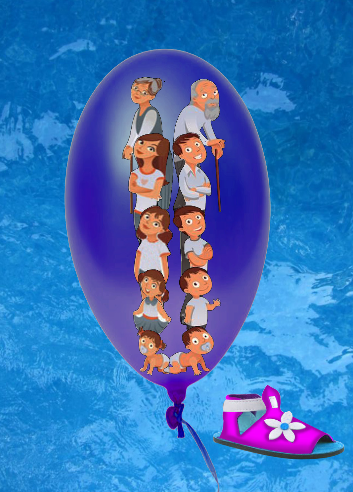

நுழையும்முன்
கதை என்றால் எல்லோருக்கும் பிடிக்கும். கதையை விரும்பாதவர் யாரும் இருக்க மாட்டார்கள். அதிலும் நம்ப முடியாத கற்பனைகளைக் கொண்ட விந்தைக் கதைகள் அனைவரையும் கவரும். கதையில் சிறந்த கருத்தும் கூறப்படுமானால் அது சர்க்கரைப் பந்தலில் தேன்மழை பொழிந்தது போல மேலும் சுவையாக இருக்கும். அத்தகைய கதை ஒன்றைப் படிப்போமா?
என்றைக்கும்போல் தியேட்டர் வாசலில் உட்கார்ந்திருந்தார் காலணி தைக்கும் மாரி. காலையிலே தொடங்கிய மழை இடைவிடாது தனது அரூப விரல்களால் நகரமெங்கம் எதையோ தேடுவதுபோல் படர்ந்து கொண்டிருந்தது. எவரேனம் காலணி தைக்க வரக்கூடுமோ எனப் பசியுடன் காத்திருந்தார். ஒரு டீ குடித்தார் கூடப் பசி அடங்கிவிடும். அதற்கும் ஒரு ரூபாய் வேண்டி இருக்கிறதே என்ற யோசனை தோன்றியது. வலுத்துப் பெய்யத் துவங்கியது மழை. காற்றும் மழையோடு சேர்ந்து கொண்டது. அந்த நீண்ட தெருவில் எவருமில்லை. அவரும் ஒரு மரமும் எட்டுப் பழைய செருப்புகளும் தவிர.
சினிமா தியேட்டரின் குறுகிய வலப்புறச் சந்தில் இருந்து குடையில்லாமல் நனைந்தபடி வெளிப்பட்ட சிறுமியொருத்தி ஒரு மீனைப் போலச் சுழன்று அவர் அருகில் வந்து தனது இடக்கையில் வைத்திருந்த காலணி ஒன்றைக் குனிந்து தரையிலிட்டு, தைத்து வைக்கும்படி சொல்லிவிட்டு அவர் நிமிர்ந்து அவளைப் பார்க்கும் முன்பு தெருவில் ஓடி அடுத்த வளைவின் சுவர்களைக் கடந்து சென்றாள்.
அந்தக் காலணி இளம் சிவப்பு நிறத்தில் இருந்தது. வழக்கமான சிறுமிகளின் காலணிபோல அல்லாது வெல்வெட் தைத்துப் பூவேலை கொண்ட காலணியாக இருந்தது. அந்தக் காலணியில் சிறுமியின் பாதவாசனை படிந்திருந்தது. அது ஏதோ ஒரு பெயரிடப்படாத நறுமணம். கிழிசலைத் தைத்து வைத்துக் கொண்டு காத்திருந்தார். இப்போதே குடிக்கப் போகும் டீயின் ருசி நாக்கில் துளிர் விட்டது. காற்றும் மழையும் தீவிரமாகிச் சுழன்றன. பின் மதியம் அஃது ஓய்ந்த போது ஒளித் திவலைகள் ஆங்காங்கே தெரியத் துவங்கின.
அந்தச் சிறுமிக்காகக் காத்திருந்தார் மாரி. நிச்சயம் இரண்டு ரூபாய் கிடைக்கம். மாலைவரை அந்தச் சிறுமி வரவில்லை. ஆனால் மீண்டும் மழை வந்துவிட்டது. பின்பு இரவு இரண்டாம் ஆட்டம் சினிமா வரை மரத்தடியில் காத்துக் கொண்டிருந்தார். அவள் வரவில்லை. மழைக்குப் பயந்து வீட்டிலேயே இருக்கக் கூடும் என நினைத்துக்கொண்டு காலணியைத் தன்னுடன் எடுத்துக் கொண்டு வீடு போய்ச் சேர்ந்தார். அடுத்த நாள் காலை மழையில்லை. நல்லவெயில்.

இளம் சிவப்பான அந்தக் காலணியை எடுத்து மீண்டும் ஒருமுறை நன்றாகத் துடைத்து, தனது நீலநிற விரிப்பில் வைத்துவிட்டு மற்ற வேலைகளில் ஈடுபடத் துவங்கினார். அன்றும் அந்தச் சிறுமி வரவேயில்லை. மறந்துவிட்டாளா? இல்லை, யாரிடம் கொடுத்தோம் எனத் தெரியாமல் அலைகிறாளா தெரியவில்லையே! என்றபடி இரவில் அதை வீட்டிற்கு எடுத்துப்போனார். மறுநாள், மூன்றாம் நாள் என நாட்கள் கடந்தபோதும் அவள் வரவேயில்லை. ஆனால் அவர் அந்தக் காலணியைத் தினமும் கொண்டுவந்து காத்துக்கிடந்தார்.
ஓர் இரவில் மாரியின் மனைவி அந்தக் காலணியைக் கண்டாள். அதன் வசீகரம் தொற்றிக்கொள்ளக் கையில் எடுத்துப் பார்த்தாள். சிறுமியின் காலணி போலிருந்தது. அதைப் போட்டுப் பார்க்க ஆசையாக இருந்தது. தனது வலது காலில் அந்தக் காலணியை நுழைத்துப் பார்த்தாள். அது அவளுக்குச் சரியாக இருந்தது. சிறுமியின் காலணி அவளுக்குப் பொருந்துகிறதே என்றவள் மற்றொரு காலணியைத் தேடிப் பையைக் கொட்டினாள். சப்தம்கேட்டு மாரி கோபமாக உள்ளே வந்தபோது, மனைவியின் வலக்காலில் இருந்த சிவப்புக் காலணியைக் கண்டார். ஆத்திரத்துடன் திட்டி, அவள் சொல்வதைக் கேட்காமல் கழற்றச் சொல்லிக் கிழிந்துவிட்டதா எனப் பார்க்கக் கையில் எடுத்து உயர்த்தினார். கிழியவில்லை. சிறுமியின் காலணி இவளுக்குத் தைத்தது போலச் சரியாக இருக்கிறதே என்ற வியப்புடன் அது ஒற்றைக் காலணி எனப் பிடுங்கிப் பையில் போட்டுக் கட்ட முயன்றார். அவள் முணுமுணுத்தபடி பின் வாசலுக்குப் போய்விட்டாள். காலணி அவருக்குள்ளும் ஆசையைத் தூண்டியது, போட்டுப் பார்க்கலாமென. தன் வலக்காலைச் சிறிய காலணியில் நுழைத்தபோது அது தனக்கும் சரியாகப் பொருந்துவதைக் காண விசித்திரமாயிருந்தது. இரண்டு வேறுபட்ட அளவுள்ள கால்களுக்கு எப்படி ஒரே காலணி பொருந்துகிறது. அவரால் யோசிக்க முடியவில்லை. எப்படியோ உரியவரிடம் அதை ஒப்படைத்துவிட வேண்டியது தனது வேலை என்றபடி பையில் போட்டுக் கொண்டார்.
மறுநாள் பகலில் உடன் தொழில் செய்யும் நபரிடம் இந்தக் காலணியின் விசித்திரம் பற்றிச் சொல்ல அவர் தன் வலக் காலைப் பொருத்திப் பார்த்தார். அவருக்கும் சரியாக இருந்தது. இச்செய்தி நகரில் பரவியது. அந்தக் காலணியைப் போட்டுப் பார்க்க ஆசை கொண்ட பலர் தினமும் வந்து அணிந்து தமக்கும் சரியாக உள்ளதைக் கண்டு அதிசயித்துப் போயினர். அந்தக் காலணி ஒருவயது குழந்தை முதல் வயசாளி வரை எல்லோருக்கும் பொருந்துவதாக இருந்தது. அதைக் காலில் அணிந்தவுடன் மேகத்துணுக்குகள் காலடியில் பரவுவதுபோலவும், பனியின்மிருது படர்வதுபோலவும் இருப்பதாகவும் பலர் கூறினர். அவர், வராது போன, காலணிக்கு உரிய சிறுமியை நினைத்துக் கொண்டார்.
கோடைகாலம் பிறந்திருந்தது. எண்ணற்ற சிறுமிகளும் பெண்களும் ஆண்களும் அந்த விந்தைக் காலணியை அணிந்து பார்த்துப்போயினர். அதை அணிந்து பார்க்க அவர்களே பணம் தரவும் தொடங்கினர். தினசரியாகப் பணம் பெருகிக் கொண்டே போனது. வருடங்கள் புரண்டன. அவர் பசு இரண்டு வாங்கினார். வீடு கட்டிக் கொண்டார். வாழ்வின் நிலை உயர்ந்து கொண்டே போனது. இப்போதும் அந்தச் சிறுமி வரக்கூடும் என்று பலர் முகத்தின் ஊடேயும் அவளைத் தேடிக் கொண்டிருந்தார்.
அவர் வருவதற்கு முன்பாகவே காலையில் பலர் மரத்தடியில் அவருக்காகக் காத்து நிற்பார்கள். அணிந்து பார்ப்பார்கள். முகத்தில் சந்தோஷம் பீறிடும். கலைந்து போவார்கள். இப்படியாக மாரியின் முப்பது வருடம் கடந்தது. அந்த வருடம் மழைக்காலம் உரத்துப்பெய்தது. ஓர் இரவில் காலணியோடு வீடு திரும்பும்போது அதை திருட முனைந்த இருவர் தடியால் தாக்க, பலமிழந்து கத்தி வீழ்ந்தார். யாரோ அவரைக் காப்பாற்றினார்கள். காலணி திருடு போகவில்லை. ஆனால், தலையில் பட்ட அடி அவரைப் பலவீனமடையச் செய்தது. வீட்டைவிட்டு வெளியேறி நடக்க முடியாதவராகிப் போனார். அந்தச் சிறுமிக்காக அவர் மனம் காத்துக்கொண்டே இருந்தது. தனது மரணத்தின் முன்பு ஒரு தரம் அவளைச் சந்திக்க முடியாதோ என்ற ஏக்கம் பற்றிக் கொண்டது. தான் அவளால் உயர்வு அடைந்ததற்கான கடனைச் சுமந்தபடி மரிக்க வேண்டும் என்பது வேதனை தருவதாக இருந்தது. பார்வையாளர்கள் அவர் வீடு தேடி வந்து அணிந்து பார்த்துப் போயினர்.
ஒரு மழை இரவில் பார்வையாளர் யாவரும் வந்து போய் முடிந்த பின்பு கதவை மூடி மாரி உள்ளே திரும்பும் போது யாரோ கதவைத் தட்டும் சப்தம் கேட்டது. கதவைத் திறந்த படி, “காலையில் வாருங்கள் “எனச் சொன்னார். மத்திய வயதில் ஒரு பெண் நனைந்தபடி நின்றிருந்தாள். அவள் தணிவான குரலில் சொன்னாள், “வெகு தாமதமாகிவிட்டது எனது காலணியைத் தைத்துவிட்டீர்களா இல்லையா?
அவளை அடையாளம் கண்டுவிட்டார் மாரி. அதே சிறுமி. அந்தப் பெண் தன் கையிலிருந்த கூடையிலிருந்து சிவப்பு நிற இடக்கால் காலணியை எடுத்து அவர் முன்னே காட்டிச் சொன்னாள். “இதன் வலது காலணி தைக்க கொடுத்தது நினைவிருக்கிறதா? அவர் தலையாட்டியபடி தன்னிடமிருந்த காலணியை எடுத்து வந்து துடைத்து அவளிடம் காட்டினார். அவள் கைகளில் தந்தபடி அதன் விந்தையை எடுத்துச் சொன்னார். “இந்தக் காலணி உலகின் எல்லாப் பாதங்களுக்கும் பொருந்துகிறது.
அவள் ஆச்சரியமின்றித் தலையாட்டினாள். தன்னிடம் இருந்த நாணயம் எதையோ அவரிடம் கூலியாகக் கொடுத்துவிட்டுக் கூடையில் அந்தக் காலணியைப் போட்டாள். இந்தச் சொத்து, வாழ்வு யாவும் அவள் தந்ததுதான். அவள் யார் என அறிய ஆவலாகிக் கேட்டார். பதிலற்றுச் சிரித்தபடி மீண்டும் மழையில் வெளியேறிச் சென்றுவிட்டாள். தெருவின் விளக்குக் கம்பம் அருகே வந்து நின்ற அவள் கூடையில் இருந்த இரண்டு காலணிகளையும் எடுத்துத் தரையிலிட்டு காலில் அணிய முயன்றாள். அவள் கொண்டு வந்த இடது காலணி சரியாகப் பொருந்தியது. தைத்த வாங்கின வலது பாதக் காலணியை அணிந்த போது அது பொருந்தவில்லை. சிறியதாக இருந்தது.
நூல் வெளி
எஸ். ராமகிருஷ்ணன் தற்காலத் தமிழ் எழுத்தாளர்களுள் குறிப்பிடத்தக்கவர். நாவல்கள், சிறுகதைகள், கட்டுரைத் தொகுப்புகள், சிறுவர் இலக்கியங்கள் என இவருடைய படைப்புகள் நீள்கின்றன. உபபாண்டவம், கதாவிலாசம், தேசாந்திரி, கால் முளைத்த கதைகள் முதலிய ஏராளமான நூல்களை எழுதியுள்ளார்.
இக்கதை தாவரங்கன் உரையாடல் என்னும் சிறுகதைத் தொகுப்பில் இடம்பெற்றுள்ளது.
கற்பவை கற்றபின்
1 தனக்குப் பெரும் வருமானத்தைத் தந்த காலணியைத் திரும்ப ஒப்படைக்க வேண்டுமென மாரி நினைத்தது ஏன்? வகுப்பில் கலந்துரையாடுக.
2 மீண்டும் வந்த பெண்ணுக்குக் காலணி பொருந்தாதது ஏன்?
3 மாரிக்குக் கிடைத்தது போன்ற காலணி உங்களுக்குக் கிடைத்தால் நீங்கள் என்ன செய்வீர்கள்? வகுப்பில் உரையாடுக.
4 பாதம் என்னும் கதையின் மூலம் நீங்கள் அறிந்து கொண்ட கருத்து யாது?
பாதம் கதையைச் சுருக்கி எழுதுக.